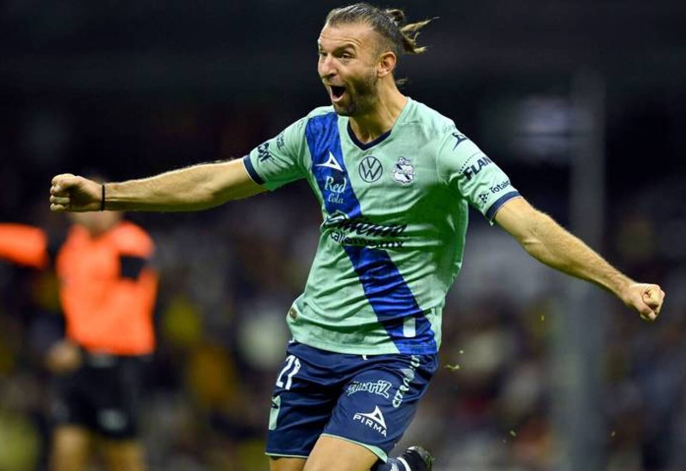

Gastón Silva: jerarquía para reforzar la defensa carbonera.

En las últimas horas el Club Atlético Peñarol hizo oficial la contratación de Gastón Silva proveniente del
Club Puebla de México.
Zaguero de 30 años con experiencia en Selección Uruguaya que también puede jugar de lateral, viene de jugar
31 partidos con el club mexicano en la pasada temporada donde convirtió un gol.
Gastón Silva venía siendo el deseo de la dirigencia desde hace años, a tal punto que desde que rescindió su
contrato con Puebla el presidente Ignacio Ruglio inició enseguida con las negociaciones por el jugador.
Sin embargo en el hincha carbonero se siembra la duda, ¿tendrá Silva un lugar en el once titular de Diego Vicente Aguirre? Con la salida de Guzmán Rodriguez al Red Bull Bragantino de Brasil, se va uno de los pilares fundamentales de la defensa carbonera, siendo Gastón Silva el apuntado por la dirigencia carbonera y Diego Aguirre.
Al día de hoy se cosecha la duda sobre si es Gastón quien merece estar en la zaga mirasol o esta debe ser ocupada por Leo Coelho, quien la temporada pasada alternó algunos partidos con Javier Méndez quien corre con muy buen presente. También puede alternar en el lateral, aunque hoy en día es más difícil ya que ese puesto está cubierto por los capitanes Maximiliano Olivera y Lucas Hernández.
Y vos, ¿crees que Gastón Silva tendrá lugar en el plantel principal?